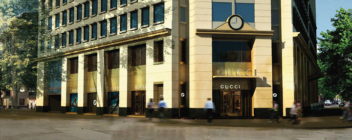
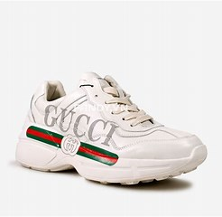

Cửa hàng Gucci ôm lấy tầng một của tòa nhà Hongkong Land mang kiến trúc Pháp lãng mạn, sang trọng và được nâng cấp hoàn toàn vào ng ày 9 tháng 8 này, để trở thành cửa hàng Gucci đầu tiên tại Việt Nam ứng dụng phong cách thiết kế mới nhất của Giám đốc sáng tạo Frida Giannini. Sáng kiến về nội thất của Frida mang đến một không gian mở, với những chất liệu ấm áp và sang trọng, lấy ánh sáng tự nhiên từ mặt tiền bằng kính màu vàng đồng. Chất liệu kính này cho phép ánh sáng tự nhiên len vào không gian bên trong cửa hàng và tạo nên tầm nhìn tuyệt đẹp cho cả bên trong lẫn bên ngoài và hoàn toàn tạo nên một hiệu ứng ánh sáng đầy ấn tượng. Nội thất cửa hàng sử dụng những chất liệu đã trở thành thương hiệu của Gucci như gỗ hồng sắc và đá hoa cương, đồng thời kết hợp hài hòa những nguyên liệu mới như kính kẻ sọc, vàng ánh hồng, gương mờ và kính đồng mờ.

Không gian bên trong được cá tính hóa bởi không gian mở và sự tiện nghi định hình bởi những đường hình học, bao gồm những dải băng mang logo Gucci. Sàn được phủ hoa cương trắng với điểm nhấn là những sọc hoa cương đen to bản chạy dài từ dưới chân lên đến những mảng tường cùng kim loại vàng trên trần. Tường được phủ đồng và kính đồng mang đến sự thân thuộc và tinh tế đến không gian bên trong cửa hàng. Sức hấp dẫn cổ điển và cảm giác sang trọng đến từ ý tưởng thiết kế cửa hàng mới The classic appeal and luxurious feel of this new store concept chính là tiêu biểu hoàn hảo về những giá trị vượt thời gian của Gucci.
